Veja o poder do Trans Resveratrol Americano + Vitamina K2 na sua pele!
Um produto rico em vitaminas que traz maciez, firmeza, rejuvenescimento e hidratação profunda!
Rejuvenesce a pele
A pele envelhece ao longo do tempo e por isso entre nossas vitaminas temos o ácido ascórbico, importante para diminuição dos radicais livres que ocasionam o envelhecimento.
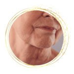
Acaba com a Oleosidade
Sua composição contém substâncias que controlam a produção sebácea, deixando a pele hidratada, iluminada naturalmente e com toque aveludado.
Combate Rugas e Bigode Chinês
O Trans Resveratrol Americano possui exclusivo sistema PROSIM3D® que diminuem a aparência das rugas deixando a pele do seu rosto mais lisa e sem as marcas do tempo.
Deixa a Pele Hidratada e Firme
Ativo inovador rico em antioxidantes que traz a juventude e vigor a pele, promovendo brilho, frescor e firmeza na primeira aplicação.
Diminui Manchas no Rosto
Uniformiza a textura e o tom da pele, deixando a sua pele iluminada, sem manchas e com uma sensação revitalizadora.
Diminui a Acne
Auxilia no combate a acne, diminuindo a vermelhidão causada pela acne e proporcionando uma pele mais clara, lisa e livre da oleosidade excessiva.
Descubra agora porque o Trans Resveratrol Americano + Vitamina K2 é tão potente!
Você também merece ter uma pele maravilhosa todos os dias
O tratamento Trans Resveratrol Americano + Vitamina K2 é aprovado pela ANVISA e possui uma fórmula exclusiva para eliminar as rugas, marcas de expressão, pés de galinhas e bigode chinês de forma natural. Várias marcas no mercado brasileiro estão se passando por TRANS RESVERATROL AMERICANO, só que não fornecem resultados esperados para os clientes, então saiba que se você usar um produto realmente americano suas rugas e marcas de expressão literalmente desapareceram em no máximo 90 dias!
Satisfação garantida ou seu dinheiro de volta!
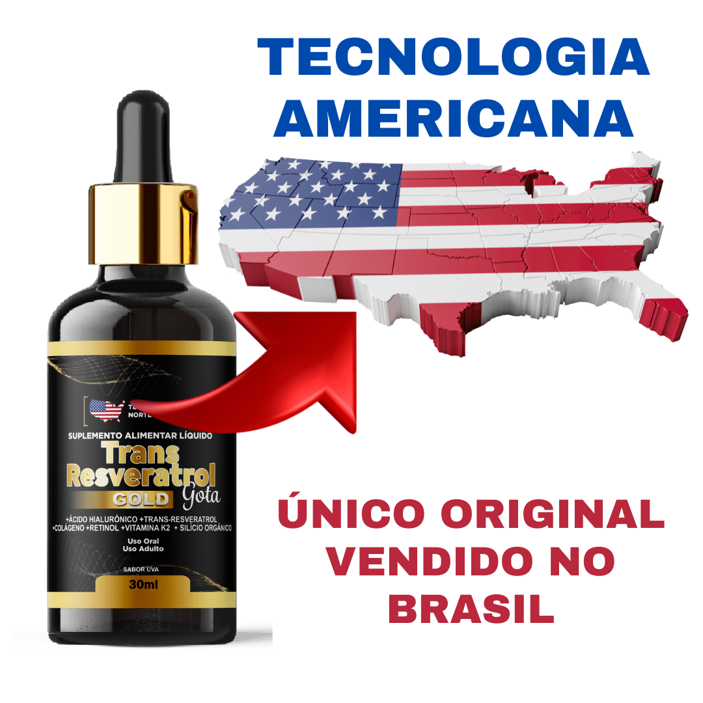
QUEM USA, RECOMENDA!
Mais de 37 mil mulheres já experimentaram o Trans Resveratrol Americano + Vitamina K2, com mais de 98% de satisfação!
Fórmula Americana e sem química agressiva ao organismo, 100% natural.
Compra 100% segura e satisfação garantida!
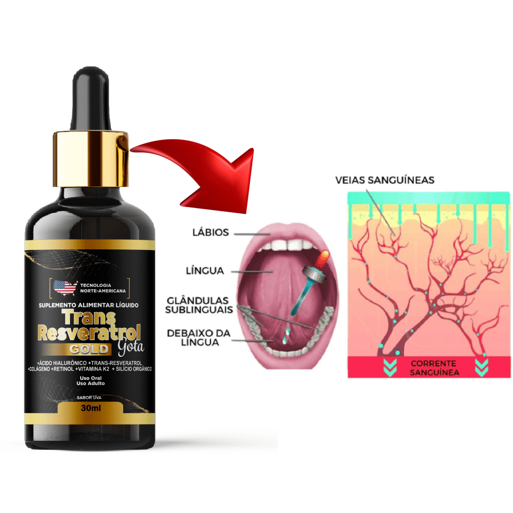
Fórmula Exclusiva
Desenvolvida nos melhores laboratórios Americanos.
A exclusiva tecnologia AMERICANA de aplicação sublingual proporciona uma absorção rápida e eficaz por meio da glândula que temos sob a língua, nela vasos que acessam diretamente a corrente sanguínea absorvem rapidamente seu conteúdo e promovem resultados surpreendentes em pouquíssimo tempo, essa é a forma mais eficaz, garantindo até 98% de absorção dos ativos da composição. Acaba com as rugas e marcas de expressão ja nas primeiras semanas de uso.
Compra 100% segura e satisfação garantida!
Como deve ser usado
O Trans Resveratrol Americano + Vitamina K2 é fácil de usar e pode ser levado para onde você for, cabe em bolsas e mochilas. Para que tenha resultados satisfatórios recomendamos o uso entre 3 a 5 meses
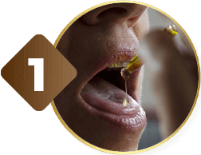
PASSO 1Coloque 1ml (12 gotas) do produto diretamente na boca, copo com água ou bebida da sua preferência
Não ingirir com bebidas quentes ou geladas, para maior eficácia do produto
Tome apenas uma vez por dia e você verá o resultado esperado
Compra 100% segura e satisfação garantida!
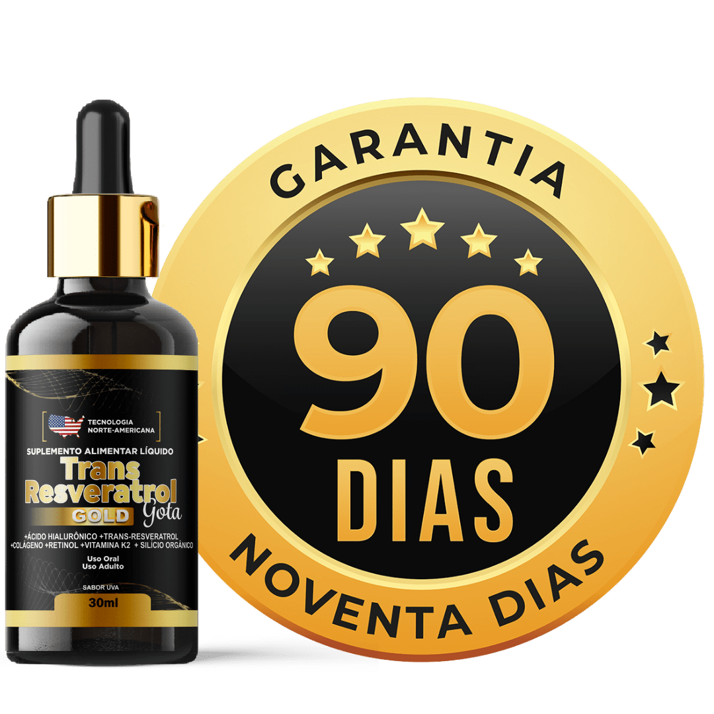
Satisfação garantida ou o seu dinheiro de volta!
Confiamos tanto na eficácia do Trans Resveratrol Americano + Vitamina K2 que, caso você utilize ele durante 90 dias e não tiver resultados, devolvemos o seu dinheiro. Isso mesmo! Resultados em 90 Dias ou seu dinheiro de volta.
Compra 100% segura e satisfação garantida!
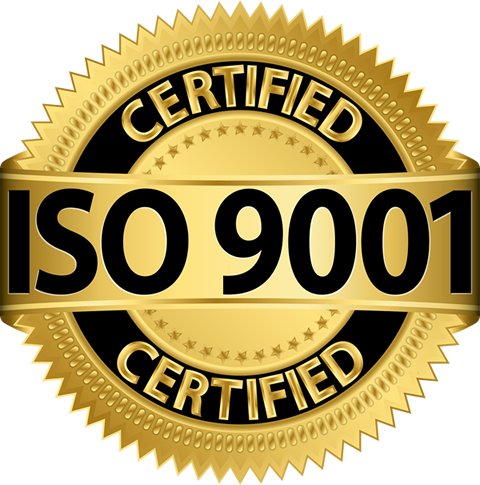
Qual o segredo da nossa fórmula?
Com exclusiva tecnologia PROSIM3D® que restaura a firmeza natural da pele enquanto descansa. Chegou o fim dos tratamentos invasivos, dolorosos e com resultado temporário!
Desenvolvida e Recomendada por Especialistas!
A fórmula do Trans Resveratrol Americano +Vitamina K2 contém a exclusiva tecnologia PROSIM3D® que proporcionam um toque aveludado deixando sua pele mais lisa e revitalizada com uma mega hidratação 3D e resultados já nas primeiras semanas de uso.
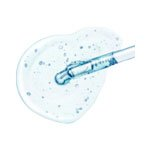
Ácido Hialurônico
Responsável por preencher os espaços que surgem entre a derme e a epiderme, ele garanta a hidratação e uniformidade à pele enquanto suaviza as rugas e marcas de expressão.
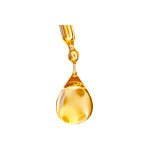
Colágeno Verisol®
Muito mais potente, é o único comprovadamente focado em agir somente na pele. Diferente de outros tipos de colágeno que agem nos ossos, cartilagens, cabelo e unha.
Trans Resveratrol
O Trans Resveratrol é um nutriente pró-longevidade. Vários estudos apontam que ele aumenta sua expectativa de vida e promove uma pele mais jovem e saudável.
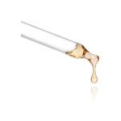
Retinol
O retinol é um derivado da vitamina A que possui a função de estimular a renovação celular, auxiliando na prevenção e no tratamento do envelhecimento
Silício Orgânico
O Silício Orgânio é um mineral fundamental para o funcionamento saudável do organismo, atuando, entre outras frentes, na regeneração da pele e no fortalecimento dos cabelos e unhas.
VITAMINA K2
Vitamina K2 O principal ativo do Trans Resveratrol Americano, e é conhecida por suas propriedades renovadoras e anti envelhecimento com um forte poder regenerador e fitoterápico
Você irá se sentir orgulhosa e feliz, quando se olhar no espelho e ver a sua pele bonita, firme e lisa com aparência de anos atrás!
Satisfação garantida ou seu dinheiro de volta!
QUEM USA, RECOMENDA!
Mais de 37 mil mulheres já experimentaram o Trans Resveratrol Americano + Vitamina K2, com mais de 98% de satisfação!
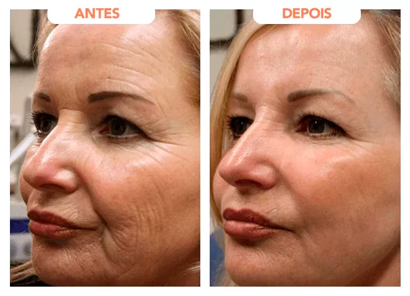
Frasncisca, 53 anos.
Venho de coração aberto escrever o quanto este produto me ajudou, com a idade chegando tudo começou a cair rsrs estou realizada, obrigado Trans Resveratrol Americano Recomendo
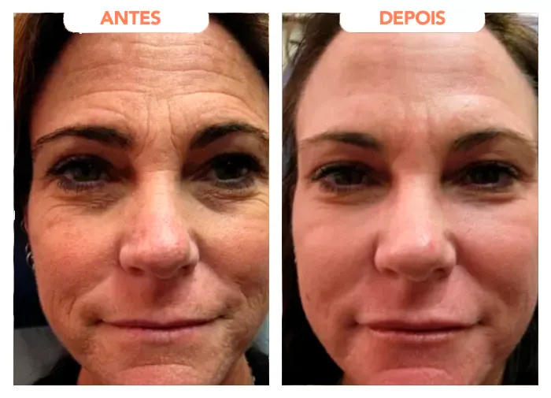
Juliana Silva, 49 anos
Eu adorei o produto, somente elogios a deixar, estava com a pele um pouco aspera e flácida... Consegui resolver somente com o Trans Resveratrol Americano, obriagada.
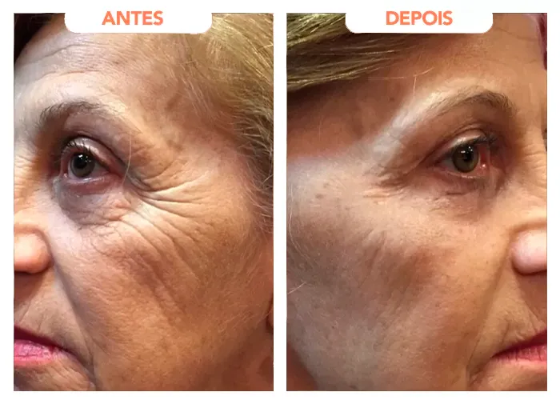
Zuleica Barbosa, 65 anos
Recomendo a todas, minha pele ficou jovem como uma moça. Adorei o produto e vou comprar novamente, obrigada Trans Resveratrol Americano.
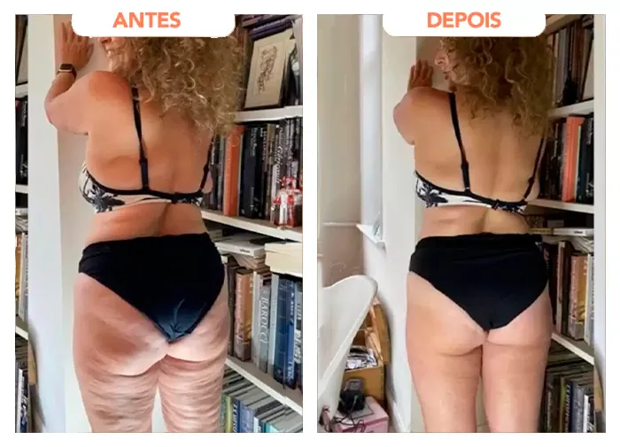
Marli Trentin, 51 anos
Sempre tive problema com flacidez, graças ao Trans Resveratrol Americano tudo mudou, eu recomendo com todo meu coração.
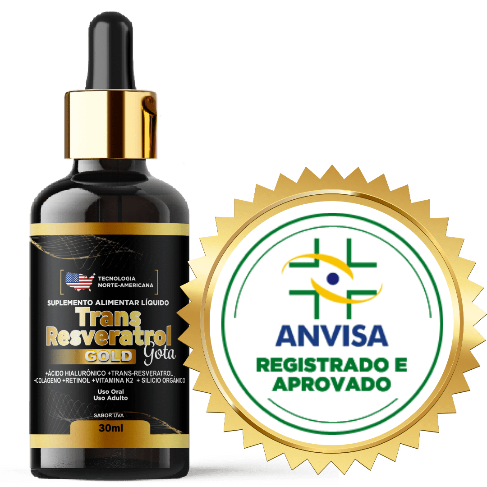
Produto Aprovado Pela Anvisa®
Nosso produto segue todas as normas e padrões de Qualidade da Anvisa, sendo aprovado em todos os testes necessários.
O que dizem na Mídia
Sobre os Ativos do Trans Resveratrol Americano
“Sim, já nos primeiros dias você sente o resultado. Ele tem o poder de melhorar a microcirculação local, proporcionar homogeneidade e repor vitaminas. Um verdadeiro elixir", exalta a dermatologista Claudia Marissol, da Sociedade Brasileira de Dermatologia.”
“A pele madura ou envelhecida precocemente também pode ter benefícios com o Trans Resveratrol Americano. Ele funciona como um potencializador na entrega dos ativos. Nessas condições de pele, a absorção e metabolismo dos ativos é minimizada, o Trans Resveratrol Americano age potencializando os resultados”, opina Sonia Correia.”
“Sua tecnologia exclusiva, somada a minerais preciosos, promove a firmeza da pele e combate os sinais da idade: rugas, perda de elasticidade, flacidez e tom da pele desigual. Desenvolvido principalmente para Pele de Mulheres Brasileiras.”
Resultado já nas primeiras semanas de uso, aproveite a promoção de lançamento
Essa é a hora de você agir, conquistar uma Pele Revitalizada e uma Aparência mais Jovem!
Você será direcionado ao checkout seguro da Braip, onde a compra é finalizada.
Seu Risco por tentar é Zero!
Garantimos os resultados do Trans Resveratrol Americano + Vitamina K2. Prova disso, que devolvemos o seu dinheiro se o produto não atender as expectativas, você terá até 90 dias após a compra para devolução*.
Guia dos ingredientes: o que cada ativo faz pela pele
Entender o que está na fórmula ajuda a comparar produtos. Abaixo, um resumo objetivo dos principais ativos citados nesta página: colágeno Verisol, ácido hialurônico, silício orgânico, retinol, trans-resveratrol e vitamina K2.
- Colágeno Verisol
- Colágeno para pele
- Ácido hialurônico oral
- Silício orgânico
- Vitamina K2
- Suplemento para pele
Colágeno Verisol: o que é e para que serve
Verisol® é uma marca de peptídeos de colágeno bioativos, desenvolvida para a pele. Diferente do colágeno hidrolisado genérico, é padronizado e foi estudado em ensaios clínicos. O estudo mais citado (Proksch e colaboradores, 2014) usou 2,5 g por dia durante 8 semanas e observou melhora da elasticidade da pele em mulheres de 35 a 55 anos. Quando pesquisar “colágeno verisol” ou “verisol vale a pena”, confira sempre a dose por porção no rótulo: a literatura trabalha com gramas, não com miligramas.
Colágeno para pele: qual tipo escolher
Os colágenos mais comuns em suplementos são os tipos I e III (mais ligados à pele, tendões e ossos) e o tipo II (mais ligado à cartilagem das articulações). Para a pele, o foco costuma ser colágeno hidrolisado dos tipos I e III ou peptídeos específicos, como o Verisol. Para articulações, o tipo II. Colágeno não substitui protetor solar nem rotina de cuidados: ele é um complemento.
Ácido hialurônico oral (cápsula ou gotas): como funciona
O ácido hialurônico faz parte da pele e retém água. A versão oral, em cápsulas ou gotas, foi avaliada em estudos pequenos, com doses diárias da ordem de dezenas a poucas centenas de miligramas por algumas semanas, com relatos de melhora de hidratação da pele. As evidências ainda são menores do que as de tratamentos aplicados na pele ou por procedimento, e o resultado depende da dose e da formulação.
Silício orgânico para pele, cabelo e unhas
O silício é um mineral presente no organismo e participa da formação de tecidos conjuntivos. Estudos pequenos com silício orgânico (como o ácido ortossilícico estabilizado) relataram melhora de textura da pele e fragilidade de cabelos e unhas. Se você procura “silício orgânico como tomar”, siga a orientação do rótulo do fabricante, que varia conforme a forma e a concentração.
Vitamina K2 e a pele
A vitamina K2 participa da coagulação e do metabolismo do cálcio nos ossos e vasos. A relação direta com a aparência da pele ainda é pouco estudada em humanos. Atenção: quem usa anticoagulantes, como a varfarina, deve falar com o médico antes de tomar qualquer suplemento com vitamina K, pois ela pode interferir no efeito do medicamento.
Suplemento para pele: o que observar antes de comprar
- Dose declarada de cada ativo no rótulo, não só a lista de nomes.
- Registro e informações do fabricante e canal de atendimento claro.
- Política de garantia e reembolso descrita antes da compra.
- Resultados variam: suplemento é complemento de alimentação equilibrada, hidratação e proteção solar.
Conteúdo informativo, sem caráter de orientação médica. Suplementos alimentares não tratam, curam ou previnem doenças. Consulte um profissional de saúde antes de começar.
Dúvidas Frequentes
Veja as principais dúvidas de nossos clientes sobre o Trans Resveratrol Americano + Vitamina K2:
O QUE É O TRANS RESVERATROL AMERICANO + VITAMINA K2?
Trans Resveratrol Americano + VITAMINA K2 é diferente de tudo que você já utilizou antes, isso porque é a primeira vez que a ciência consegue juntar tantos ativos poderosos em uma só composição: Ácido Hialurônico + Retinol + Trans Resveratrol + VITAMINA k2 + Vitaminas e + Verisol
COMO DEVO UTILIZAR O TRANS RESVERATROL AMERICANO + VITAMINA K2?
Tudo o que você precisará fazer é ingerir 20 gotas pela manhã ou a noite, conforme sua preferencia. Preferencialmente embaixo da língua. Nossa fórmula é ultra concentrada!.
Proporcionando o tratamento de dentro para fora mais poderoso do mercado atual, sendo 100% absorvido pelo organismo graças a composição líquida.
Atuando diretamente na produção de colágeno, restauração de células velhas e proporcionando uma pele firme e livre das rugas.
TRANS RESVERATROL AMERICANO + VITAMINA K2 É SEGURO?
Totalmente seguro, sem nenhuma contraindicação ou efeito colateral. No entanto, você não deve interromper o uso de remédios ou da insulina sem a autorização médica.
COMPOSIÇÃO DO TRANS RESVERATROL + VITAMINA K2 É AUTORIZADO PELA ANVISA?
Sim, os ingredientes utilizados são autorizados para uso em suplementos alimentares, conforme Instrução Normativa – IN N° 28/2018. As concentrações dos ingredientes são calculadas de acordo com a RDC nº 269/2005 e IN 28/2018. Por ser natural, este produto não é considerado medicamento.
COMO POSSO COMPRAR O TRANS RESVERATROL AMERICANO + VITAMINA K2??
Basta escolher o kit que mais combina com você. Trans resveratrol Americano pode ser pago a vista, através de boleto bancário, ou através de cartão de crédito parcelado em até 12x.
QUANTO TEMPO PARA TRANS RESVERATROL AMERICANO + VITAMINA K2?
É recomendando o uso por 3 meses consecutivos para obter os melhores resultados. No entanto, há relato de pessoas que já sentem uma boa diferença entre a 2 e 4 semanas.
COMO FUNCIONA A GARANTIA DE 90 DIAS DO TRANS RESVERATROL AMERICANO + VITAMINA K2?
A cliente deve tirar uma selfie nítida antes de iniciar o tratamento de 90 dias e a selfie deve conter a data. Após terminar de tomar todos os frascos, deve ser tirada outra selfie com data provando que passou os 90 dias.
Caso ainda assim não tenha tido resultados visíveis, os frascos vazios devem ser devolvidos pela própria cliente para a empresa, e após os frascos chegarem na Fábrica, o valor pago pela cliente no tratamento de 90 dias será devolvido integralmente
TRANS RESVERATROL AMERICANO + VITAMINA K2 TEM ALGUMA CONTRA INDICAÇÃO?
Não, o produto é 100% natural. Mas Gestantes e Lactantes só podem consumir o produto através de prescrição médica. Mulheres amamentando podem consumir o produto após o 6º mês de amamentação.